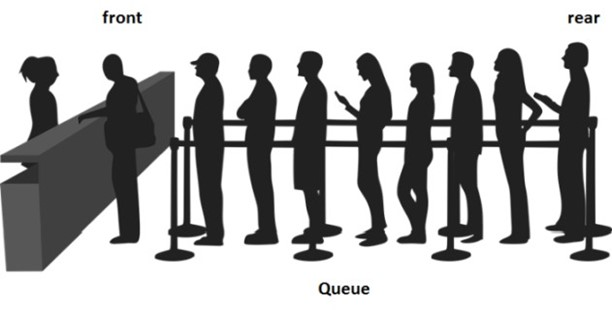

Antrian
Queues atau antrian merupakan struktur data dimana penambahan data baru dan penghapusan data berada di ujung yang berbeda. Hal ini berbeda dengan stacks, dimana penambahan data baru dan penghapusan data, dilakukan pada ujung yang sama. Pada Queues, seperti halnya antrian, penambahan data baru dilakukan di suatu ujung atau yang dikenal dengan nama rear, dan penghapusan data dilakukan pada ujung yang dikenal dengan nama front, seperti yang terlihat pada Gambar berikut :

Operasi pada antrian
- queue (), inisialisasi struktur data queue kosong
- enqueue (data), penambahan data baru pada queue
- dequeue (), penghapusan data
- isEmpty(), pengecekan apakah queue dalam keadaan kosong
- size (), informasi jumlah data yang terdapat pada queue
Contoh Code
q = []
q.append('a')
q.append('b')
q.append('c')
print("Initial queue:", q)
print("Elements dequeued from queue:")
print(q.pop(0))
print(q.pop(0))
print(q.pop(0))
print("Queue after removing elements:", q)